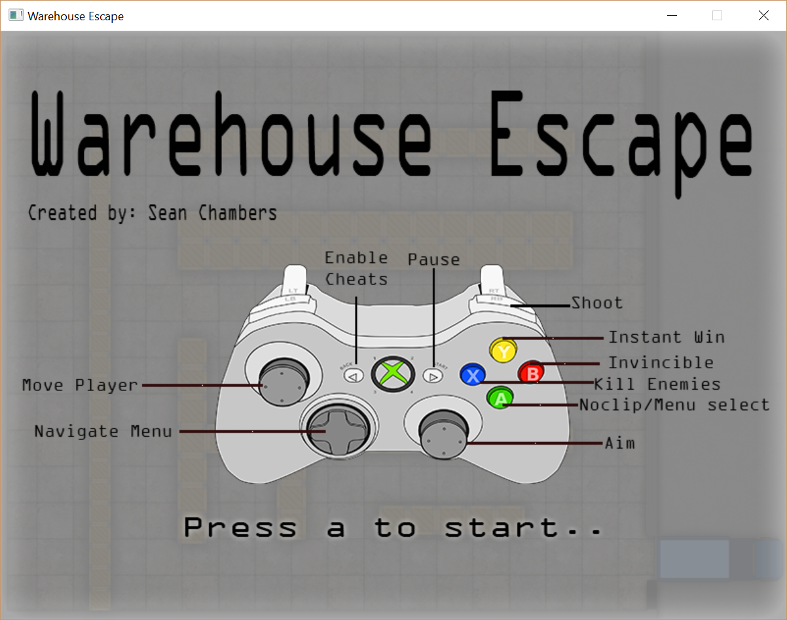
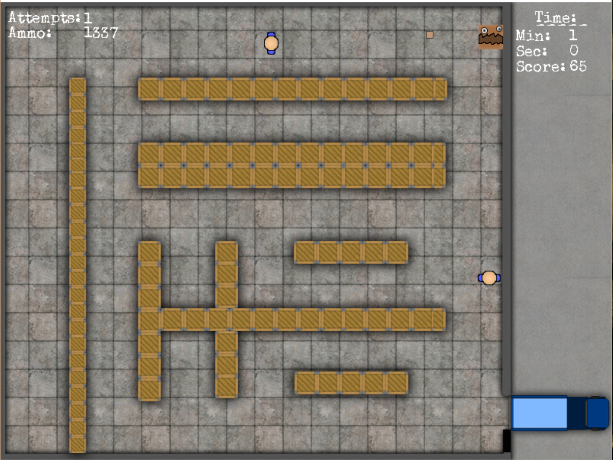
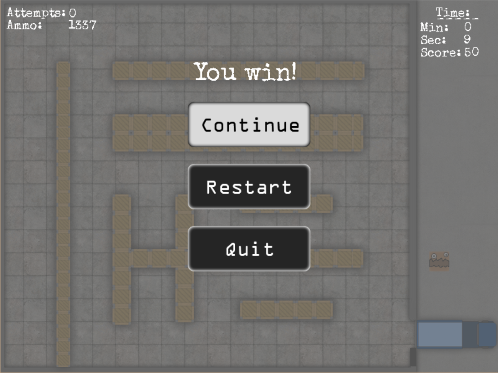

Projects
Warehouse Escape (Solo Project)
Overview
Warehouse escape is a top-down 2D shooter/strategy game built on COMP710 GP 2D Framework (Game framework created by Steffan Hooper), coded in C++ . You are a cardboard box filled with goods stuck in warehouse. It is your goal to escape by making your way through the warehouse without being caught and jump into the back of the delivery truck to get out of there!
The enemy employees will attempt to catch you, if you are within their range. They will move quickly. If they collide with you then you will be reset. You also have the option kill the enemies by throwing smaller boxes at them, but are limited to amount of ammo. If an employee is to catch you, you will respawn back at the start after 5 seconds.
Every escape attempt will be recorded.
The quicker the player reaches the end; the more points they will be rewarded.
To see more, view the Game Design Document & Techinical Design Document, below in the files section.
Middleware
The middlewares' implemented. Click each to see website(Opens in new tab).
Controls

Screenshots


Reflection
Overview:
This project has been a great learning experience for myself. At first I found it very overwhelming, due to have doing majority
of my programming in Java. This project has been a massive learning curve for myself. Throughout the development of
Warehouse Escape, I utilised the lecture slides, google, and the discussion forum to solve any programming issues that arose.
During development I was fortunate enough to have my flatmate’s test my game as it was being developed. This was very useful for
finding bugs, and also great for getting general feedback.
I feel good with the end result. I do however regret not making a more fun side-scroller, rather than the top-down game that it is. The game has no memory leaks, bugs, crashes, warnings, and can be restarted, paused, and quit. The quality of the code could be improved, however due to time constraints, I felt the extra time I had would be better adding more features, and making a gold build because it ran fine. The goal of the game is still the same as mentioned in the design phase. However, some features were change during development, and some were not included.
Challenges:
Box2D collision offsets - One issue I ran into was the Box2D colliders not being at the same location as my sprites. This was because
the sprites were being placed from the middle, and my colliders were not. I solved this by applying the same logic using to place the
sprites from the middle to the colliders.
Drawing text to the screen caused me a bit of trouble, and was not drawing. I solved this by using the discussion forum provided by my lecturer, Steffan Hooper, as other students were having similar problems.
Another challenge I faced was collision filtering. I knew what logic I wanted my game to apply, but I needed to use Box2D's filtering system to solve this challenge. I spent some time researching; reading through the Box2D manual, and viewing other's problems on the internet. Then I was able to apply what I had read into my game. Having collision filtering was essential to this game because I wanted different entities to interact differently with each other, in terms of collision.
What I would do different next time:
In future projects, I would like to create a resource manager. This way all assets needed will be loaded into the game on launch, then can be
accessed by all classes until the game is closed. Additionally, in future projects, I will be making more time to make games more data driven.
I would like to upskill more before taking on projects in the future, as I did not upskill enough before using Box2D. This resulted in me using development time to upskill.
Adding keyboard and mouse support for future games will definitely be implemented.
Files
References
Catto, E. (2015). Box2D | A 2D Physics Engine for Games. [online] Box2d.org.
Available at: http://box2d.org/ [Accessed 23 Oct. 2016].
Fmod.org. (2016). FMOD. [online]
Available at: http://www.fmod.org/ [Accessed 23 Oct. 2016].
YouTube. (2016). NoCopyrightSounds. [online]
Available at: https://www.youtube.com/user/NoCopyrightSounds [Accessed 23 Oct. 2016].
OpenGameArt.org. (2016). OpenGameArt.org. [online]
Available at: http://opengameart.org/ [Accessed 23 Oct. 2016].
Libsdl.org. (2016). Simple DirectMedia Layer - Homepage. [online]
Available at: https://www.libsdl.org/ [Accessed 23 Oct. 2016].
Code Snippet
// COMP710 GP 2D Framework
// This includes:
#include "game.h"
// Local includes:
#include "backbuffer.h"
#include "inputhandler.h"
#include "logmanager.h"
#include "Texture.h"
#include "sprite.h"
#include "AnimatedSprite.h"
#include "entity.h"
#include "PlayerShip.h"
#include "Enemy.h"
#include "Bullet.h"
#include "background.h"
#include "Box2D.h"
#include "staticObject.h"
#include "Menu.h"
// Library includes:
#include <cassert>
#include <SDL.h>
#include <SDL_ttf.h>
// Static Members:
Game* Game::sm_pInstance = 0;
Game&
Game::GetInstance()
{
if (sm_pInstance == 0)
{
sm_pInstance = new Game();
}
assert(sm_pInstance);
return (*sm_pInstance);
}
void
Game::DestroyInstance()
{
delete sm_pInstance;
sm_pInstance = 0;
}
Game::Game()
: m_pBackBuffer(0)
, m_pInputHandler(0)
, m_looping(true)
, m_executionTime(0)
, m_elapsedSeconds(0)
, m_frameCount(0)
, m_FPS(0)
, m_numUpdates(0)
, m_lastTime(0)
, m_lag(0)
{
}
Game::~Game()
{
//delete entities
for (auto i = bullets.begin(); i != bullets.end(); ++i)
delete *i;
for (auto x = enemies.begin(); x != enemies.end(); ++x)
delete *x;
for (auto y = staticObjects.begin(); y != staticObjects.end(); y++)
delete *y;
animatedBullet->~AnimatedSprite();
enemyChaseTexture->~Texture();
//release audio
if (!backgroundMusicReleased)
backgroundMusic->release();
winSound->release();
stunSound->release();
menuButtonSound->release();
hitEnemy->release();
spotEnemy->release();
hitWall->release();
//Background/Map
//other
delete m_pInputHandler;
m_pInputHandler = 0;
delete world;
world = 0;
delete m_pBackBuffer;
m_pBackBuffer = 0;
//Delete sprites
delete mapSprite;
mapSprite = 0;
delete background;
background = 0;
delete playerSprite;
playerSprite = 0;
delete playerShip;
playerShip = 0;
delete startScreen;
startScreen = 0;
delete animatedBullet;
animatedBullet = 0;
delete blockSprite;
blockSprite = 0;
//MENU
delete m_menu;
m_menu = 0;
soundSystem->release();
}
bool
Game::Initialise()
{
m_pBackBuffer = new BackBuffer();
if (!m_pBackBuffer->Initialise(SCREEN_WIDTH, SCREEN_HEIGHT))
{
LogManager::GetInstance().Log("BackBuffer Init Fail!");
return (false);
}
m_pInputHandler = new InputHandler();
if (!m_pInputHandler->Initialise())
{
LogManager::GetInstance().Log("InputHandler Init Fail!");
return (false);
}
controllerMode = STARTSCREEN;
//MENU
m_menu = new Menu();
m_menu->Initialise(m_pBackBuffer, SCREEN_WIDTH, SCREEN_HEIGHT);
//SOUND
// Create the sound system object.
FMOD::System_Create(&soundSystem);
// Initialize the sound system object.
soundSystem->init(512, FMOD_INIT_NORMAL, 0);
//Initialize background music, and play.
soundSystem->createSound("assets\\sounds\\btfragout.mp3", FMOD_DEFAULT, 0, &backgroundMusic);
backgroundMusic->setMode(FMOD_LOOP_NORMAL);
soundSystem->playSound(backgroundMusic, 0, true, &channel0);
channel0->setVolume(0.1f);
channel0->setPaused(false);
//Initialize other sounds
soundSystem->createSound("assets\\sounds\\shoot01.flac", FMOD_DEFAULT, 0, &stunSound);
stunSound->setMode(FMOD_LOOP_OFF);
soundSystem->createSound("assets\\sounds\\hitWall.flac", FMOD_DEFAULT, 0, &hitWall);
hitWall->setMode(FMOD_LOOP_OFF);
soundSystem->createSound("assets\\sounds\\wincloud9.mp3", FMOD_DEFAULT, 0, &winSound);
winSound->setMode(FMOD_LOOP_OFF);
soundSystem->createSound("assets\\sounds\\menuSelection.wav", FMOD_DEFAULT, 0, &menuButtonSound);
menuButtonSound->setMode(FMOD_LOOP_OFF);
//START SCREEN
startScreen = m_pBackBuffer->CreateSprite("assets\\sprites\\playScreen2.png");
startScreen->SetX(SCREEN_WIDTH/2);
startScreen->SetY(SCREEN_HEIGHT/2);
//MAP
//Load wall sprite
wallTexture = m_pBackBuffer->CreateTexture("assets\\sprites\\blackWall01.png");
blockSprite = m_pBackBuffer->CreateSprite(wallTexture);
//Spawn outer walls
SpawnMapBlock(wallTexture,world,true,800, 10, SCREEN_WIDTH/2, SCREEN_HEIGHT-5);
SpawnMapBlock(wallTexture, world, true, 800, 10, SCREEN_WIDTH / 2, 5);
SpawnMapBlock(wallTexture, world, true, 10, 600, SCREEN_WIDTH - 5, SCREEN_HEIGHT / 2);
SpawnMapBlock(wallTexture, world, true, 10, 600, 5, SCREEN_HEIGHT / 2);
//spawn inner walls (Truck Wall)
SpawnMapBlock(wallTexture, world, true, 10, 510, SCREEN_WIDTH - 137, SCREEN_HEIGHT / 2 - 36);
SpawnMapBlock(wallTexture, world, true, 10, 30, SCREEN_WIDTH - 137, SCREEN_HEIGHT / 2 + 275);
//spawn inner walls
SpawnMapBlock(wallTexture, world, false,20, 500, 100, SCREEN_HEIGHT / 2 + 50);
SpawnMapBlock(wallTexture, world, false, 400, 30, 380, 115);
SpawnMapBlock(wallTexture, world, false, 400, 60, 380, 215);
SpawnMapBlock(wallTexture, world, false, 30, 200, 195, 415);
SpawnMapBlock(wallTexture, world, false, 30, 200, 295, 415);
SpawnMapBlock(wallTexture, world, false, 400, 30, 380, 415);
SpawnMapBlock(wallTexture, world, false, 150, 30, 460, 330);
SpawnMapBlock(wallTexture, world, false, 150, 30, 460, 500);
//Initialize s
mapSprite = m_pBackBuffer->CreateSprite("assets\\sprites\\background2.png");
background = new Background(0, 0);
background->Initialise(mapSprite);
//PLAYER
//Load the player sprite.
playerSprite = m_pBackBuffer->CreateSprite("assets\\sprites\\playerBox.png");
//Create the player instance.
playerShip = new PlayerShip(world, 50, 550);
playerShip->Initialise(playerSprite);
//BULLET
animatedBullet = m_pBackBuffer->CreateAnimatedSprite("assets\\sprites\\cardboardBullet02.png");
//ENEMIES
//load enemy sprite
enemyTexture = m_pBackBuffer->CreateTexture("assets\\sprites\\enemyIdle.png");
enemyChaseTexture = m_pBackBuffer->CreateTexture("assets\\sprites\\enemyChase.png");
soundSystem->createSound("assets\\sounds\\hitEnemy.flac", FMOD_DEFAULT, 0, &hitEnemy);
soundSystem->createSound("assets\\sounds\\huh.wav", FMOD_DEFAULT, 0, &spotEnemy);
//spawn enemies..
SpawnEnemy(enemyTexture, world, 300, 50);
SpawnEnemy(enemyTexture, world, 300, 280);
SpawnEnemy(enemyTexture, world, 300, 150);
SpawnEnemy(enemyTexture, world, 450, 280);
SpawnEnemy(enemyTexture, world, 300, 575);
//Set Timer to default values
ResetTimer();
m_lastTime = SDL_GetTicks();
m_lag = 0.0f;
return (true);
}
bool
Game::DoGameLoop()
{
const float stepSize = 1.0f / 60.0f;
assert(m_pInputHandler);
m_pInputHandler->ProcessInput(*this);
if (m_looping)
{
int current = SDL_GetTicks();
float deltaTime = (current - m_lastTime) / 1000.0f;
m_lastTime = current;
m_executionTime += deltaTime;
m_lag += deltaTime;
while (m_lag >= stepSize)
{
//If game is not paused then process as normal
if (!gamePaused && !inStartScreen)
{
world->Step(stepSize, 6, 6);
Process(stepSize);
}
//if game is paused freeze simulation
else
{
Process(0);
world->Step(0, 0, 0);
}
m_lag -= stepSize;
++m_numUpdates;
}
Draw(*m_pBackBuffer);
}
//If the game is paused, then pause all audio
if (!gamePaused)
soundSystem->update();
SDL_Delay(1);
return (m_looping);
}
void
Game::Process(float deltaTime)
{
// Count total simulation time elapsed:
m_elapsedSeconds += deltaTime;
// Frame Counter
if (m_elapsedSeconds > 1)
{
m_elapsedSeconds -= 1;
m_FPS = m_frameCount;
m_frameCount = 0;
}
//has player won?
CheckPlayerWin();
//if game is not finished, then process.
if (!gameFinished)
{
// W02.3: Process each bullet in the container.
for (Bullet* currentBullet : bullets)
{
if (currentBullet->IsDead() == false)
currentBullet->Process(deltaTime);
}
//process each enemy in container
for (Enemy* enemy : enemies)
if (enemy->IsDead() == false)
enemy->Process(deltaTime);
GameTimer(deltaTime);
}
playerShip->Process(deltaTime);
//Remove any dead bullets from the container...
std::vector<Bullet*>::iterator bulletIter;
bulletIter = bullets.begin();
while (bulletIter != bullets.end())
{
Bullet* currentBullet = *bulletIter;
if (currentBullet->IsDead())
{
bulletIter = bullets.erase(bulletIter);
delete currentBullet;
}
else
++bulletIter;
}
bullets.shrink_to_fit();
//Remove dead enemies from container
std::vector<Enemy*>::iterator enemyIter;
enemyIter = enemies.begin();
while (enemyIter != enemies.end())
{
Enemy* currentEnemy = *enemyIter;
if (currentEnemy->IsDead())
{
enemyIter = enemies.erase(enemyIter);
delete currentEnemy;
}
else
++enemyIter;
}
enemies.shrink_to_fit();
}
void
Game::Draw(BackBuffer& backBuffer)
{
++m_frameCount;
backBuffer.Clear();
//Draw background
background->Draw(backBuffer);
//draw static objects
for (StaticObject* obj : staticObjects)
if (obj->draw == true)
obj->Draw(backBuffer);
//Draw start screen
if (inStartScreen)
startScreen->Draw(backBuffer);
else
{
//draw enemies
for (Enemy* enemy : enemies)
enemy->Draw(backBuffer);
// W02.3: Draw all bullets in container...
for (Bullet* currentBullet : bullets)
currentBullet->Draw(backBuffer);
//Draw the player...
playerShip->Draw(backBuffer);
if (gamePaused)
m_menu->Draw(backBuffer);
if (gameFinished)
{
backBuffer.DrawText(false, "You win!", SCREEN_WIDTH / 2 - 90, SCREEN_HEIGHT / 2 - 200);
}
//Draw Attempts by player
backBuffer.DrawText(true, "Attempts:", 10, 12);
backBuffer.DrawText(true, playerShip->getPlayerAttempts(), 110, 14);
backBuffer.DrawText(true, "Ammo:", 10, 32);
backBuffer.DrawText(true, playerShip->printBulletNumber(), 110, 32);
//Score
backBuffer.DrawText(true, playerShip->getPlayerScore(), 675, 76);
//Draw Timer
backBuffer.DrawText(true, "Time:", 700, 12);
backBuffer.DrawText(true, "_____", 700, 12);
backBuffer.DrawText(true, "Min:", 675, 36);
backBuffer.DrawText(true, this->currentMinute, 745, 36);
backBuffer.DrawText(true, "Sec:", 675, 56);
backBuffer.DrawText(true, this->currentSecond, 745, 56);
}
backBuffer.Present();
}
void
Game::Quit()
{
m_looping = false;
}
void
Game::StartGame()
{
inStartScreen = false;
controllerMode = INGAME;
}
//Player directionals
//Move player horizontally
void
Game::MovePlayerLeft(int input)
{
playerShip->setXInput((float)input);
}
//move player vertically
void
Game::MovePlayerUp(int input)
{
playerShip->setYInput((float)input);
}
//Spawn bullet
void
Game::FireStun(float x, float y)
{
//if game is not finished
if (!gameFinished)
{
if (playerShip->getBulletCount() > 0)
{
//Create a new bullet object.
bullet = new Bullet(world, soundSystem, hitWall, playerShip->GetPositionX(), playerShip->GetPositionY());
bullet->Initialise(animatedBullet);
//Set the bullets verticle and horizontal velocity.
bullet->SetVerticalVelocity(x);
bullet->SetHorizontalVelocity(y);
bullet->Process(0);
//Add the new bullet to the bullet container.
bullets.push_back(bullet);
soundSystem->playSound(stunSound, 0, false, &channel0);
if (!cheats)
playerShip->setBulletCount(playerShip->getBulletCount() - 1);
else
{
playerShip->setBulletCount(1337);
}
}
}
}
//Timer
void
Game::GameTimer(float deltaTime)
{
this->m_second;
this->m_minute;
if (m_second < 60)
{
m_second += deltaTime;
}
else
{
m_minute++;
m_second = 0;
}
//Covert time (float) to int, then int to to const char*
//secs
int tmpSec = (int)m_second;
sec = std::to_string(tmpSec);
currentSecond = sec.c_str();
//mins
int tmpMin = (int)m_minute;
min = std::to_string(tmpMin);
currentMinute = min.c_str();
}
void
Game::ResetTimer()
{
this->m_second = 0;
this->m_minute = 0;
}
//Creates objects of different sizes and adds them to staticObjects container
void
Game::SpawnMapBlock(Texture* texture, b2World* world, bool drawSprite, int width, int height, float xPos, float yPos)
{
staticObject = new StaticObject(world, blockSprite, drawSprite, width, height, xPos, yPos);
staticObject->Process(0);
staticObjects.push_back(staticObject);
}
//Creates enemies and adds them to enemies container
void
Game::SpawnEnemy(Texture* texture, b2World* world, float xPos, float yPos)
{
enemySprite = m_pBackBuffer->CreateSprite(texture);
animatedSprite = m_pBackBuffer->CreateAnimatedSprite(enemyChaseTexture);
enemyObject = new Enemy(world, soundSystem,hitEnemy, spotEnemy, enemySprite, animatedSprite, xPos, yPos, playerShip);
enemies.push_back(enemyObject);
}
//Check if player has won - if player reaches end of map.
void
Game::CheckPlayerWin()
{
if (playerShip->GetPositionX() >= 700 && !gameFinished)
{
PlayerWins();
LogManager::GetInstance().Log("You Win.");
}
}
//Kills all enemies, plays win music, and stops game loop////
void
Game::PlayerWins()
{
for (Enemy* enemy : enemies)
enemy->killEnemy();
backgroundMusic->release();
backgroundMusicReleased = true;
soundSystem->playSound(winSound, 0, true, &channel0);
channel0->setVolume(0.5f);
channel0->setPaused(false);
if (m_second < 15 && m_minute < 1)
playerShip->UpdateScore(-50);
else if (m_second < 30 && m_minute < 1)
playerShip->UpdateScore(-40);
else if (m_second < 30 && m_minute < 1)
playerShip->UpdateScore(-40);
else if (m_second < 45 && m_minute < 1)
playerShip->UpdateScore(-30);
else if (m_second < 60 && m_minute < 1)
playerShip->UpdateScore(-25);
else
playerShip->UpdateScore(-10);
gameFinished = true;
PauseGame();
}
//Pause Simulation///////////////////////////////
void
Game::PauseGame()
{
//boolean used to switch
if (!gamePaused)
{
gamePaused = true;
controllerMode = MENU;
}
else
{
gamePaused = false;
m_menu->ResetMenu();
controllerMode = INGAME;
}
}
/////////////////////////Menu//////////////////////////////////////////
void
Game::ScrollMenu(int x)
{
if (gamePaused){
m_menu->ChangeButton(x);
soundSystem->playSound(menuButtonSound, 0, false, &channel0);
}
}
void
Game::PressMenuButton()
{
if (gamePaused)
{
if (m_menu->getButton() == 0)
PauseGame();
else if (m_menu->getButton() == 1)
ResetGame();
else if (m_menu->getButton() == 2)
Quit();
}
}
void
Game::ResetGame()
{
resetGame = true;
}
bool
Game::WillReset()
{
return resetGame;
}
ControllerOption
Game::getCurrentController()
{
return controllerMode;
}
bool
Game::isGameFinished()
{
return gameFinished;
}
void
Game::enableCheats()
{
if (cheats)
{
cheats = false;
LogManager::GetInstance().Log("Cheats Disabled.");
}
else
{
cheats = true;
LogManager::GetInstance().Log("Cheats Enabled.");
playerShip->setBulletCount(1337);
}
}
bool
Game::cheatsEnabled()
{
return cheats;
}
///////////////Cheats///////////////////////
//No clip
void
Game::NoClip()
{
if (!gamePaused)
{
playerShip->NoClip();
}
}
//Instantly Win
void
Game::InstantWin()
{
if (!gamePaused)
{
LogManager::GetInstance().Log("You Win - Cheater.");
PlayerWins();
}
}
//Kill all enemies
void
Game::KillAllEnemies()
{
if (!gamePaused)
{
for (Enemy* enemy : enemies)
enemy->killEnemy();
LogManager::GetInstance().Log("All enemies killed.");
}
}
//Invincible/God mode - Cannot be caught by enemies
void
Game::Invincible()
{
if (!gamePaused)
playerShip->ToggleInvincible();
}